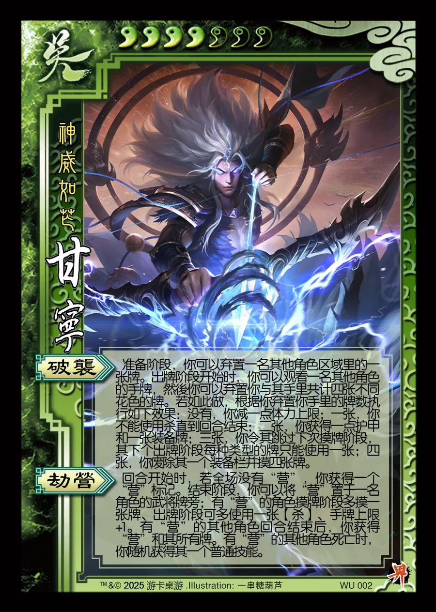

点击卡面查看大图
吴
界甘宁
♥4/7神威如芒
破袭
准备阶段，你可以弃置一名其他角色区域里的一张牌。出牌阶段开始时，你可以观看一名其他角色的手牌，然後你可以弃置你与其手里共计四张不同花色的牌。若如此做，根据你弃置你手里的牌数执行如下效果：没有，你减一点体力上限；一张，你不能使用杀直到回合结束；二张，你获得一点护甲和一张装备牌；三张，你令其跳过下次摸牌阶段，其下个出牌阶段每种类型的牌只能使用一张；四张，你废除其一个装备栏并摸四张牌。
劫营
回合开始时，若全场没有“营”，你获得一个“营”标记。结束阶段，你可以将“营”置于一名角色的武将牌旁；有“营”的角色摸牌阶段多摸一张牌、出牌阶段可多使用一张【杀】、手牌上限+1。有“营”的其他角色回合结束后，你获得“营”和其所有牌。有“营”的其他角色死亡时，你随机获得其一个普通技能。